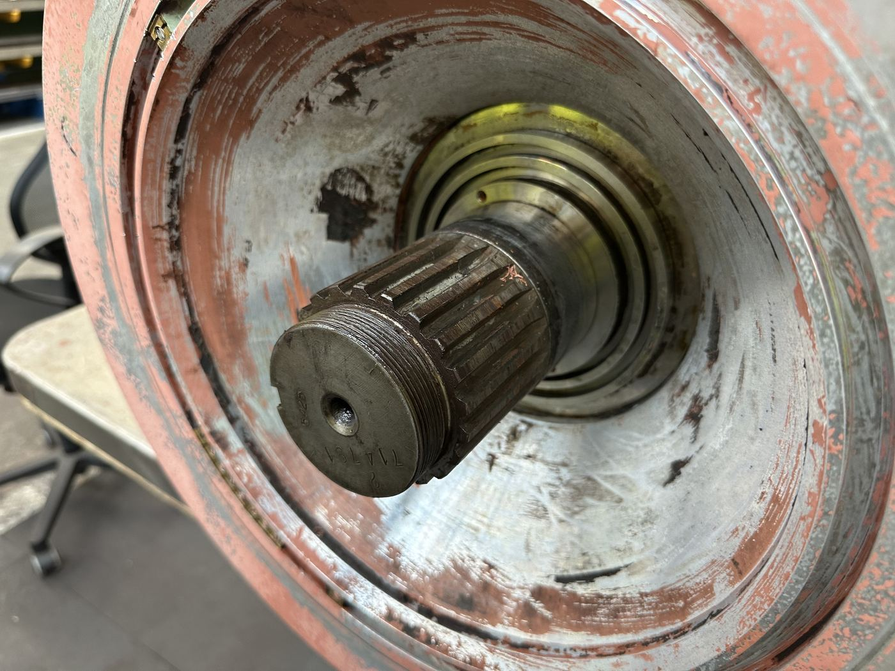
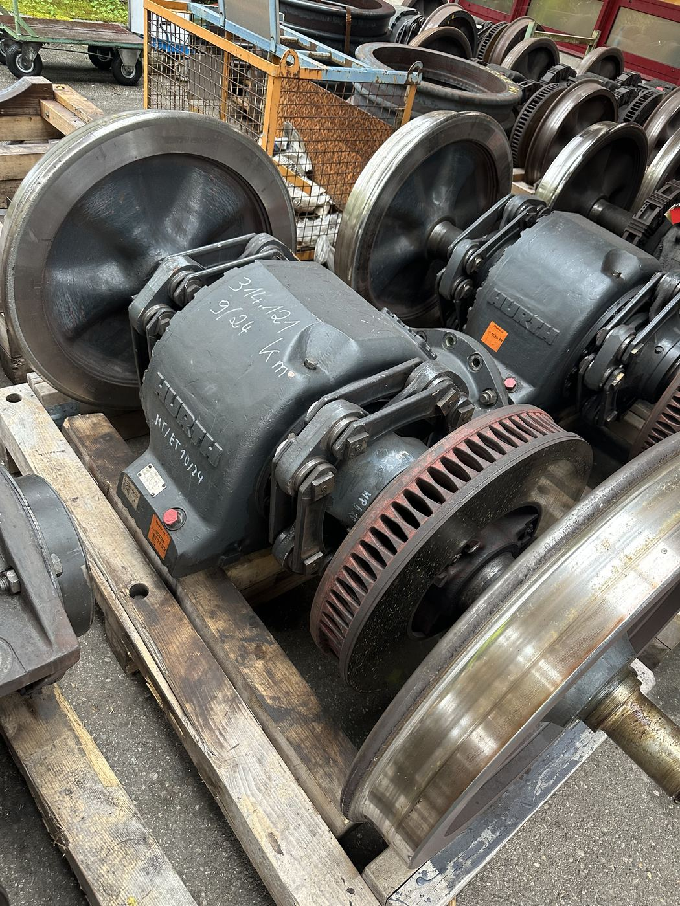
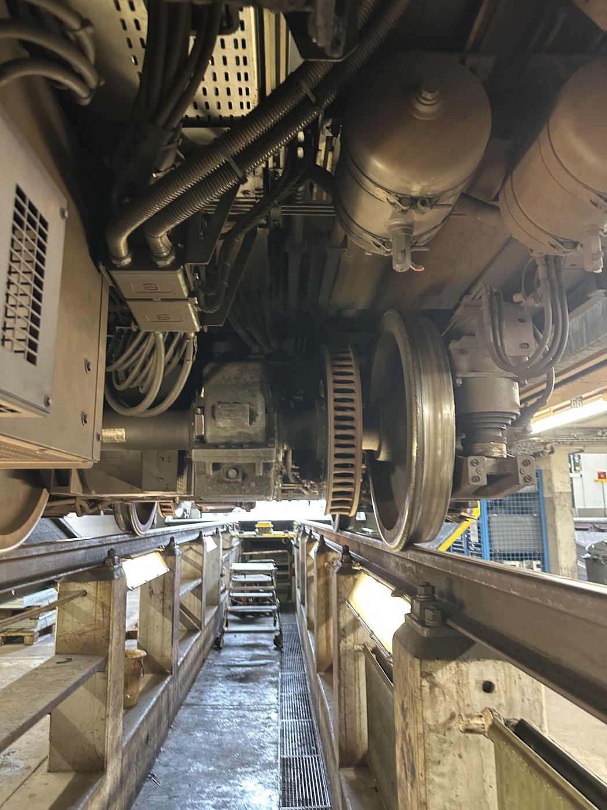

Keilwelle in Zentrierbohrung – Verbindung zwischen Motor und Getriebe.
Bauteil auf der Seite „Drehgestell“
Kraftschlüssige Keilwellenverbindung zwischen Motor und Getriebe. Zentrierbohrung, Freistich und Werkzeugauslauf erleichtern die Fertigung; eine Nut nimmt das Sicherungsblech auf, das die Verbindung axial sichert.
Eine Keilwellenverbindung überträgt Drehmoment formschlüssig über mehrere am Umfang verteilte Zähne/Keile – im Gegensatz zur reinen Passfederverbindung verteilt sich die Belastung gleichmäßiger, was höhere Drehmomente bei kompakter Bauform erlaubt.
Freistich und Werkzeugauslauf sind typische Konstruktionsdetails der Fertigungstechnik: Sie verhindern beim Schleifen bzw. Verzahnen scharfe Kanten und Kerbspannungsspitzen am Übergang zwischen bearbeiteten Flächen.

